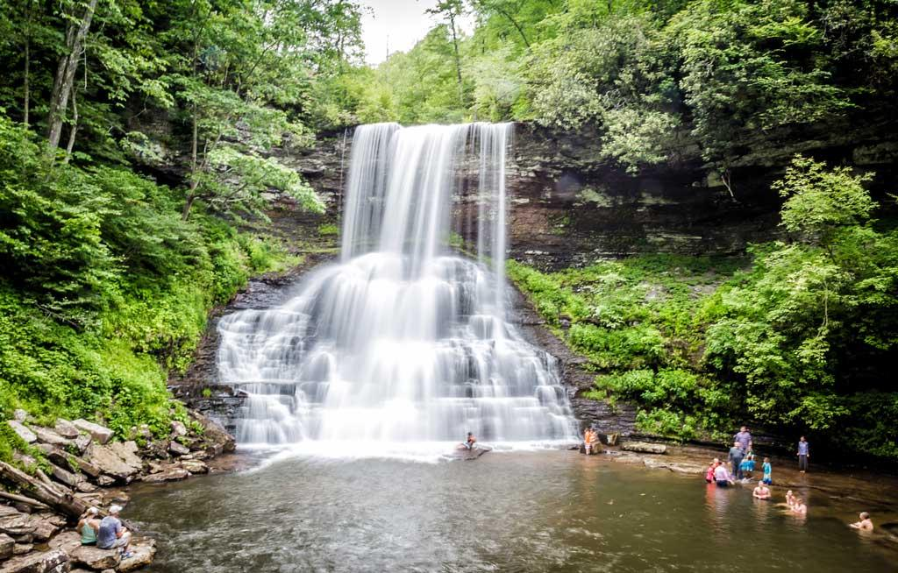

Great Falls Park - Activities
Welcome to the Activities page of Great Falls Park! Whether you're a nature lover, an outdoor enthusiast, or someone looking for a peaceful retreat, the park offers a wide range of activities suitable for all ages and interests. Explore our trails, enjoy wildlife watching, or have a picnic with a beautiful view of the Potomac River.
Outdoor Activities:

1.Hiking and Trails
- Billy Goat Trail: Challenging, with stunning views.
- Falls View Trail: Easy, family-friendly, with great views of the falls.
- River Trail: Moderate, peaceful riverside walk.
2.Wildlife Watching
- Spot birds, deer, and other wildlife along the park’s trails, especially in early morning or evening.
3.Picnicking
- Relax at designated picnic areas with river views, including Great Falls Picnic Area and Riverbend Picnic Area.
4.Canoeing & Kayaking
- Paddle the Potomac River (rentals available nearby). Note: Be cautious around the falls
Educational Activities:
1.Visitor Center
- Learn about the park’s history and wildlife through interactive exhibits and ranger-led programs. Open daily, 9 AM - 5 PM.
2.Historic Sites
- Explore the Chesapeake and Ohio Canal and Lockhouse 10, and take a self-guided tour of the park’s history.
Scenic Views:

1.Great Falls Viewpoints
- Don’t miss the breathtaking views from the Overlook Trail and River Overlook.
2.Scenic Drives
- Enjoy the George Washington Memorial Parkway for a scenic drive with stunning river views.
Explore and enjoy the beauty and adventure at Great Falls Park!